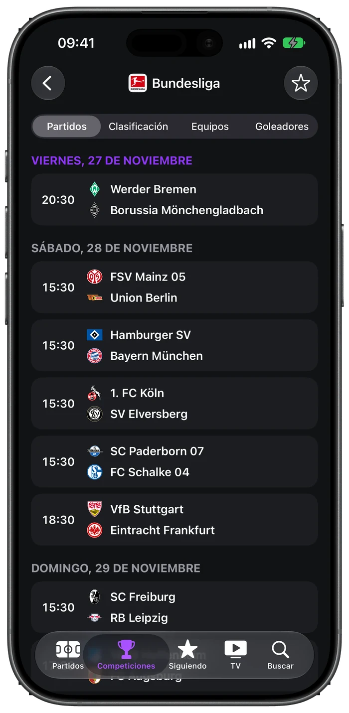

EL PARTIDO.
EL MARCADOR.
POR FIN JUNTOS.
Resultados, estadísticas y los equipos que sigues, junto a la lista IPTV de tu propia suscripción. Ritvo no incluye canales.
Apúntate a la betaPara iPhone, iPad, Mac y Apple TV
ASÍ ES RITVO
TU PARTIDO.
TODO A MANO.
Resultados, estadísticas y tu propia lista IPTV. Sin canales ni emisiones incluidos.
- El marcador, a tu ritmo.Sincronizado con tu tele.
- Tú eliges cuándo.Modo sin spoilers.
- Más partido.Multiview para seguir varios a la vez.
